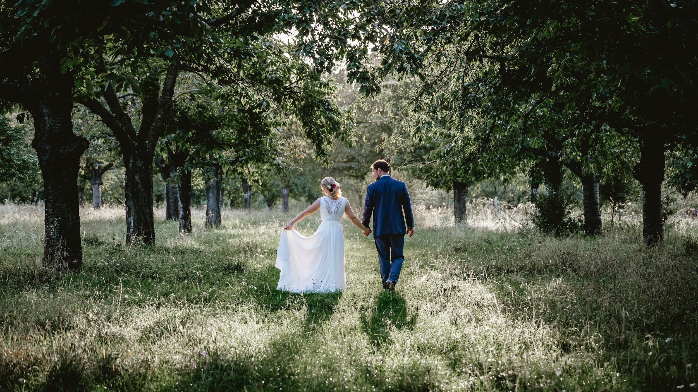
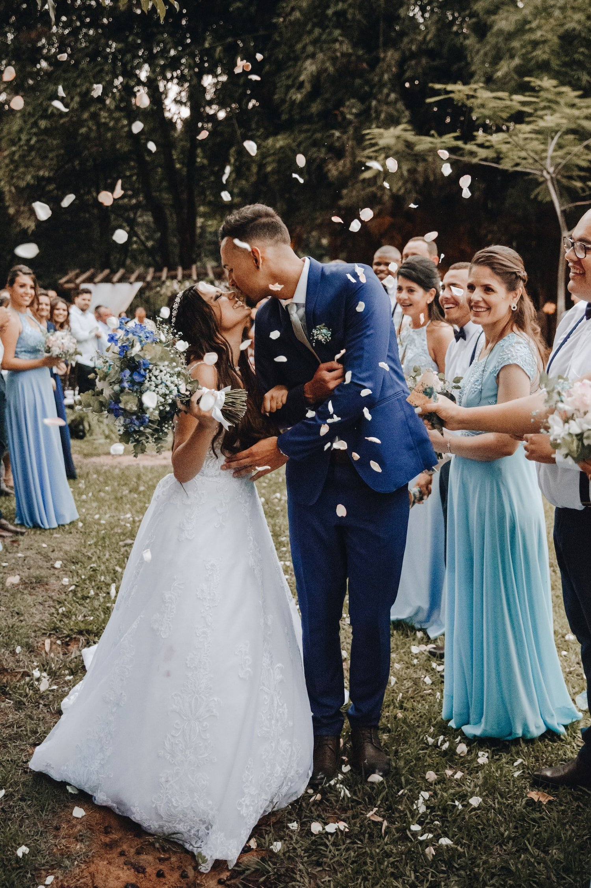
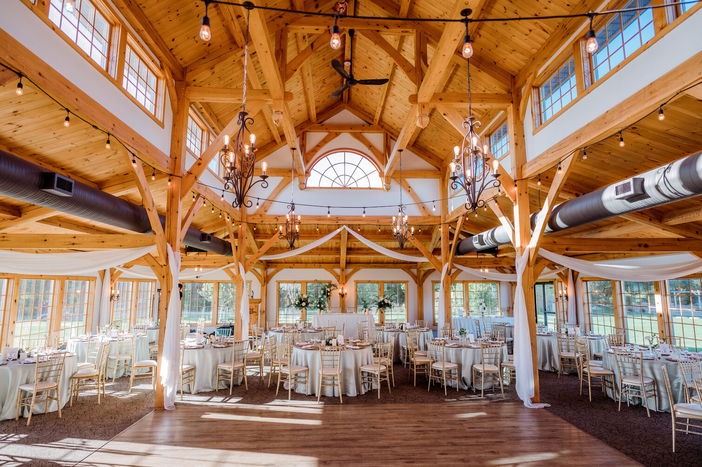
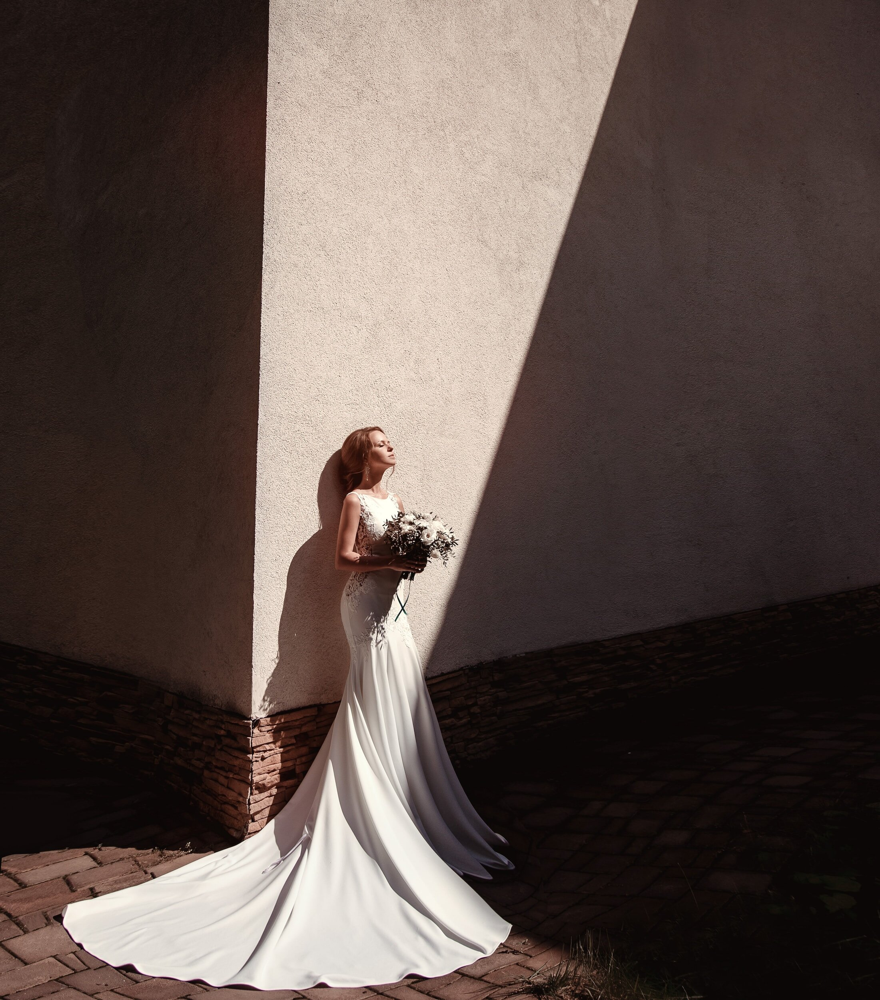

01
Winnipeg GuideThe Best Wedding Videography in Winnipeg: Capturing Your Perfect Day
Your wedding day is one of the most meaningful celebrations of your life. Choosing the right videographer in Winnipeg ensures those precious moments are preserved forever.
Read Article →
02
LocationsTop 10 Wedding Videography Locations in Brandon & Winnipeg
The best Brandon and Winnipeg wedding film locations — parks, venues, and city backdrops that look breathtaking on video.
Read Article →
03
Planning TipsHow to Choose the Best Wedding Videographer in Manitoba
A practical guide to comparing Manitoba wedding videographers — style, audio, timelines, and what really matters for your film.
Read Article →
04
Couples GuideFinding the Right One
Your wedding films — after your photos — will be your most cherished keepsake from the big day. Here's how to find the team who will do your story justice.
Read Article →
05
Behind The LensThe Art Of Film: Capturing Your Day
Your wedding day is a momentous occasion filled with love, laughter, and cherished memories. Here's how we translate that into a cinematic film.
Read Article →
06
Winnipeg VenuesCapturing Love Stories at Winnipeg's Most Stunning Wedding Venues
From The Forks to the Fort Garry Hotel, we've filmed across Winnipeg's most breathtaking venues. Here's what each looks like through a cinematic lens.
Read Article →
07
Behind The LensThe Art of Posing
Your wedding film serves a far greater purpose than announcing your relationship on social media. Here's how intentional posing shapes your entire film.
Read Article →08
Film ValueWhy Is Wedding Film Important?
Photography freezes a moment. Film brings it back to life. Here's why wedding videography is the most meaningful keepsake from your wedding day.
Read Article →09
Film ValueWhy Does Wedding Film Cost So Much?
Sticker shock is real — but so is the work behind your film. An honest breakdown of what goes into the cost of professional wedding videography.
Read Article →
10
Film ValueWhy Hire a Videographer?
More couples than ever are adding videographers to their wedding team — and for good reason. Here's what you gain when you choose to have your day on film.
Read Article →